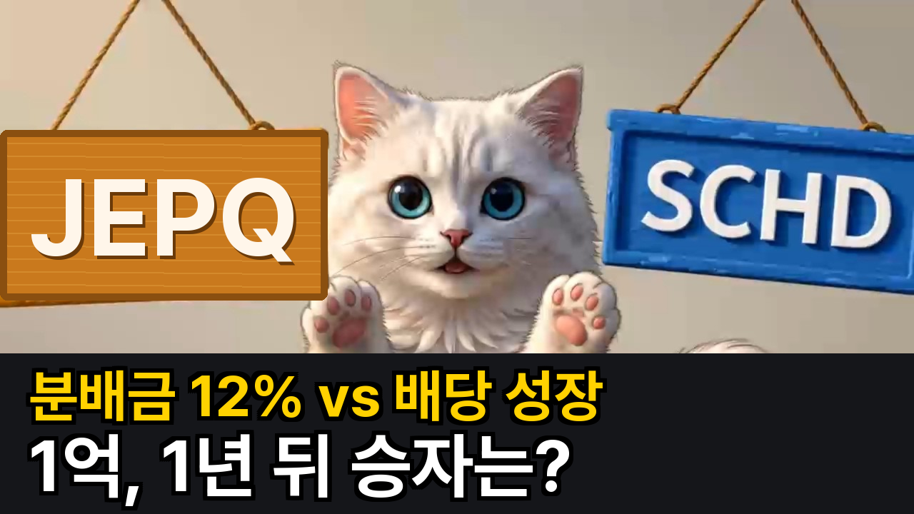
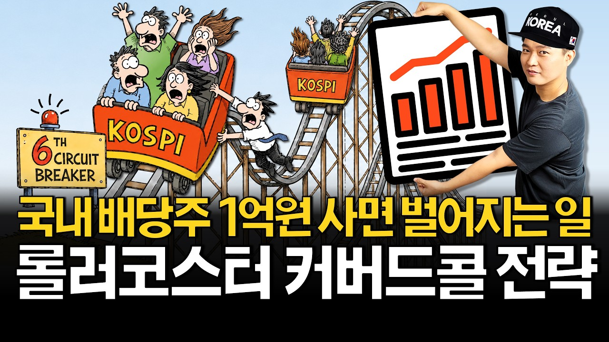

① 시안 1280×720 (빨간 점선 = 영상 길이 자리 25%×20%, 주황 = 진행 막대 5%)
JEPQ
1년 뒤 1억 1,679만
SCHD
1년 뒤 1억 2,462만
JEPQ 분배금 12%인데
783만원 덜 남았다
② 320×180으로 줄였을 때 (규칙 2)
시안(이 페이지가 ①을 복제·축소)

지금 걸린 v3(재탕)
③ 휴대폰 목록 375px — 경쟁 상위작 사이에 넣어 보기 (규칙 3)

17:31
1억원으로 월배당 300만원 받는법 (고배당주, 금융주, 커버드콜)
수페TV · 조회수 27만회
14:20
SCHD·JEPQ에 1억씩 넣고 1년, 세금 떼고 남은 돈 (커버드콜 ETF 비교)
파이어맵 · 시안
—
배당 ETF에 10억 투자하면 종합소득세·건보료 다 떼고 매달 이만큼 들어옵니다
똑재TV · 조회수 38만회
—
월배당 ETF 10억 투자하면 정말 배당금 얼마?
은퇴머니 · 조회수 72만회